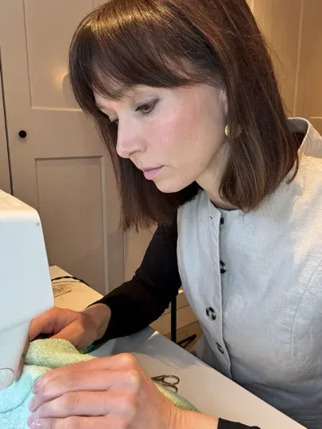
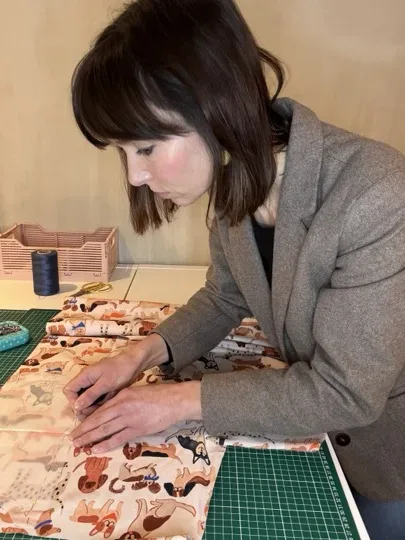
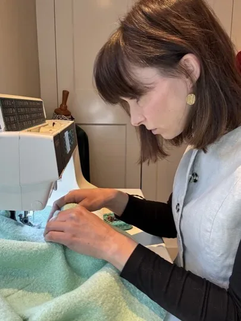
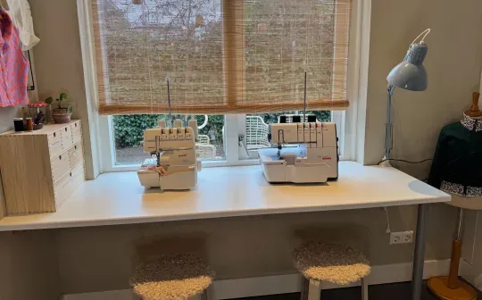
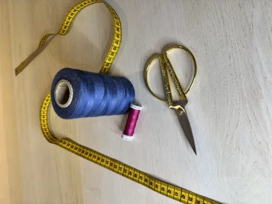
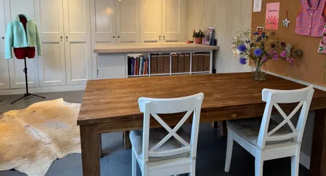
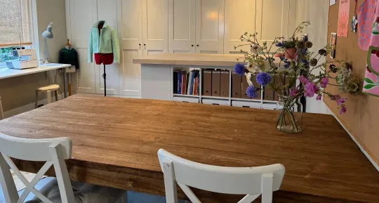
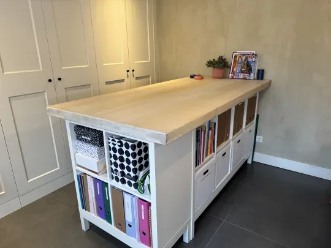

Naailes Kleine groepen Persoonlijke aandacht
Persoonlijke aandacht en begeleiding op jouw niveau
Bij Studio Stiksel volg je naailes in kleine groepen van maximaal vier personen. Dankzij deze opzet is er veel ruimte voor persoonlijke aandacht en begeleiding op jouw niveau.
In het atelier staat voor iedere cursist een naaimachine klaar, maar je kunt natuurlijk ook je eigen machine meenemen.

Impressie uit het atelier








